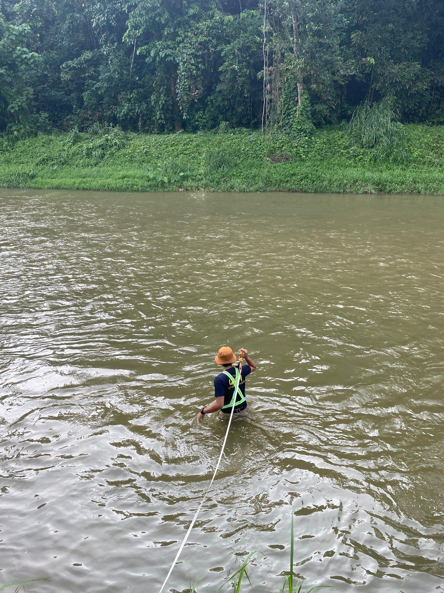

Ecotourism & Spatial Research



Project: Spatial Model for Hot Spring Locations as Potential Ecotourism Sites in Ulu Slim, Perak
Project Background
Ulu Slim in Perak has several natural hot springs with potential for ecotourism development. However, a systematic study to identify the most suitable locations for sustainable tourism is lacking. This project applies spatial modeling and GIS analysis to determine high-potential sites, supporting ecotourism planning and environmental management.
Study Area
The study area covers Ulu Slim, Perak, a region with natural hot springs, forested areas, and rural settlements. The terrain includes hilly landscapes, rivers, and access routes relevant for tourism planning.
Objectives
- Identify potential hot spring locations suitable for ecotourism.
- Apply spatial modeling techniques to assess environmental and accessibility factors.
- Provide recommendations for sustainable ecotourism development in Ulu Slim.
Methodology
- Conduct field surveys and site visits to collect location and environmental data.
- Collect and digitize spatial data on topography, land use, and accessibility.
- Apply GIS-based spatial modeling to identify suitable locations using multiple criteria (environmental, accessibility, and proximity to settlements).
- Analyze survey and questionnaire data from local stakeholders to validate model results.
Software Used
- QGIS - spatial analysis and mapping
- ArcMap & ArcGIS Pro - GIS processing and visualization
- Microsoft Excel - survey data management and analysis
Outputs
- Spatial suitability maps highlighting potential hot spring sites for ecotourism.
- Data-driven recommendations for site selection and sustainable tourism planning.
- Comprehensive report integrating field survey, GIS analysis, and stakeholder input.
Final Conclusions
- Certain hot spring locations were identified as highly suitable for ecotourism based on accessibility, environmental factors, and proximity to settlements.
- GIS-based spatial modeling proves effective in supporting sustainable ecotourism planning.
- The findings provide a practical framework for local authorities and developers to enhance ecotourism while conserving natural resources in Ulu Slim.